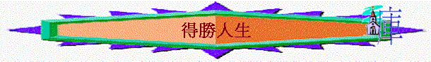

引言
何謂得勝？ 得勝的相反是什麼？
你認為得勝的基督徒應有什麼表現？
一．得勝的表現à聖潔
1.為何要聖潔？
（帖前3:13、4:3）
2.何謂聖潔？ 聖潔的相反是什麼？
二．現實的失敗
1.在現實生活中你又覺得自己是否聖潔？
為何失敗？（太4:
1-2）（約一2:16-17）（羅8:5）
2.世界有什麼吸引之處?
3.
基督徒可以作出什麼事情來體貼自己而令信仰有倒退呢？
三．至終的得勝
～我們又如何的得勝？
1.要有信心（約壹5:4）
＊
信什麼？（約壹5:3）（羅7:25）（猶24）（約壹1:8-9）
2.脫離卑賤（提後2:21-22）
＊你認為何謂卑賤的事？
3.
ˍˍˍˍ（提後2:21-22）
4.ˍˍˍˍ（提後2:21-22）
5.一同追求（提後2:21-22）
＊有沒有一些基督徒的生命很吸引你的，而你又想與他一同追求？
參考答案：
一．神的旨意，不受責備
沒罪、清潔、分別出來
二．世界的吸引
體貼肉體／自己
三．靠主可勝過；主能力保守；信主的血可赦免
逃避私慾
儆醒祈禱